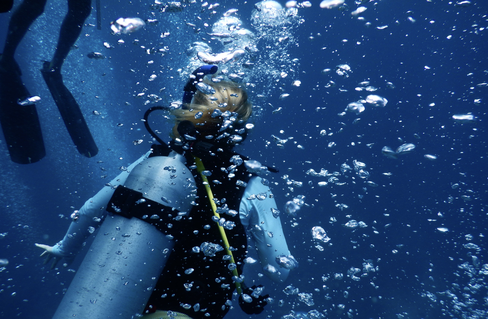

This section provides background context on scuba diving as a recreational activity as well as terms used throughout the project.

Scuba Diving Certification and Why It Matters
Scuba diving certification is a structured training process provided by world-wide organizations such as PADI that prepares individuals to dive safely within recreational limits. It typically includes academic instruction on dive process, pressure effects, equipment use, and safety procedures, followed by water skill training and open water dives under instructor supervision. Successful completion results in certification, allowing divers to dive independently with a buddy within specified depth and experience limits.
Certification is important because it establishes a standardized level of training in an activity with inherent physiological and environmental risks. Divers are exposed to pressure changes, gas management challenges, and potential equipment issues, all of which require proper knowledge and response skills. Training reduces the likelihood of preventable incidents by teaching safety practices such as buoyancy control, dive planning, and emergency procedures, ultimately improving overall diving safety and risk awareness.
Safety Procedures and Underestimations in Recreational Diving
Safety procedures concluded in the study, Safety Priorities and Underestimations in Recreational Scuba Diving Operations (2018) by Lucrezi et al., identify critical controls that reduce incident probability and severity.
Personal emergency action or assistance plan: Ensures divers know exactly what to do in case of an emergency, including how to get help and manage incidents. Allows divers to prevent emergencies such as running out of air and equipment malfunction.
Buddy system: Requires divers to monitor and assist each other during dives. Important because buddy separation and buddy-system failure were identified as common factors in incidents and accidents.
Pre-dive check: A structured check of equipment and readiness before entering the water. Important because it helps catch equipment problems early, yet divers often underestimate how consistently it is performed.
Proper gas management (avoiding running out of air): Involves monitoring air supply and following safe consumption practices, ensuring the diver has enough air to return to the surface. Important because running out of gas was one of the most frequently reported and witnessed incident types.
Use of safety equipment (dive computer, surface marker buoy): Dive computers track depth and decompression limits, while surface marker buoys help divers signal their location. Both are essential for reducing risk and improving visibility and tracking.
Emergency oxygen availability at dive centres: Ensures immediate treatment for diving-related medical issues such as decompression illness. It is considered a top safety requirement and can significantly reduce harm after incidents.
Training in buoyancy and emergency skills: Includes skills like controlling depth, mask clearing, and handling problems underwater. Better skill levels are linked to safer diving behavior and reduced accident risk.
Preventive maintenance of equipment: Regular checking and servicing of diving gear. Important because equipment failure was both a commonly experienced incident and a major perceived risk among divers.
Hydration awareness: Encourages divers to drink enough fluids before and during diving activities. Dehydration was underappreciated but linked to increased risk of complications like decompression illness.
Risk awareness and safety education campaigns: Ongoing education from dive centres and safety organizations about hazards and best practices. Improved awareness supports safer decision-making underwater.
Important Fatality Terms in Scuba Diving
Important terms associated with scuba diving fatalities by definition according to Diving and Hyperbaric Medicine Volume 54 (2024), Lippmann and Caruso:
Decompression sickness (DCS)
A condition that occurs when dissolved nitrogen forms bubbles in the body during or after a rapid ascent from depth. These bubbles can cause joint pain, dizziness, paralysis, or death if severe. It is often linked to ascending too quickly or poor decompression practices.
Pressure related injuries
Injuries caused by changes in pressure during descent or ascent underwater, including damage to air spaces in the body such as ears, sinuses, lungs, and teeth. They happen when pressure is not properly equalized.
Arterial gas embolism (AGE)
A life-threatening condition where gas bubbles enter the arterial bloodstream, often due to lung overexpansion during a rapid ascent. These bubbles can block blood flow to the brain, heart, or other organs, leading to stroke-like symptoms, unconsciousness, or death.
Asphyxia
Death or injury caused by lack of oxygen reaching the body. In scuba diving, this can result from drowning, equipment failure, running out of air, or airway blockage.
Immersion pulmonary edema (IPE)
A condition where fluid accumulates in the lungs during immersion in water. It causes severe shortness of breath, coughing, and reduced oxygen exchange, and can be fatal if not treated quickly.
Cardiac event
A heart-related emergency such as a heart attack or sudden cardiac arrest. It can be triggered by physical exertion, stress, cold water, or underlying heart conditions during a dive.
Barotrauma
Tissue damage caused by pressure differences between internal air spaces and surrounding water pressure. It can lead to lung collapse or air leakage into the chest or bloodstream.
Hypoxia
A condition where the body or brain does not receive enough oxygen. It can result from equipment failure, breath-holding, or gas supply issues.
Drowning
Death caused by the respiratory system being unable to obtain oxygen due to water entering the airway or inability to breathe. It is often a final outcome of other problems such as panic, equipment failure, or asphyxia.
Nitrogen narcosis
A reversible condition caused by breathing nitrogen under pressure at depth. It leads to impaired judgment, confusion, and poor decision-making, which can increase accident risk.
Equipment failure
Malfunction or misuse of diving gear such as regulators, tanks, or buoyancy devices. It can lead to loss of air supply, buoyancy control issues, or drowning if not resolved.
Buddy separation
When diving partners become separated underwater. This increases risk because divers lose immediate assistance in emergencies, often contributing to fatalities.
Pressure-Related Risks While Scuba Diving
Pressure-related injuries in diving form because water pressure increases quickly with depth, about one atmosphere every 10 meters. As a diver descends, the surrounding pressure compresses any gas-filled spaces in the body, such as the ears, sinuses, and lungs. If these spaces are not equalized by adding air through normal breathing or pressure equalization techniques, a pressure imbalance develops between the inside and outside of the body.
During descent, this pressure difference can cause compression injuries like ear barotrauma or sinus squeeze, where tissues are forced inward and can become damaged or filled with fluid. During ascent, the opposite problem occurs. As pressure decreases, gases inside the body expand. If a diver does not exhale properly or ascends too quickly, this expanding gas can overinflate lung tissue or surrounding air spaces, leading to lung overexpansion injuries. In severe cases, air can escape into the chest cavity or bloodstream, causing life-threatening complications.
Pressure-related injuries happen when the body cannot properly balance internal gas spaces with changing external water pressure during descent or ascent.
Forensic Investigation and Autopsy in Diving Fatalities
Techniques Used to Determine Cause of Death
According to Lippmann and Caruso in Diving and Hyperbaric Medicine Volume 54 (2024), investigation of scuba diving fatalities requires a coordinated forensic approach that combines field investigation, equipment analysis, medical review, and a targeted postmortem examination. Because diving accidents typically result from a cascade of events involving human, environmental, and equipment-related factors, accurate determination of the cause of death depends on integrating multiple sources of evidence rather than relying on a single finding.
In scuba diving fatality investigations, determining the cause of death and the initiating trigger relies heavily on structured forensic autopsy procedures combined with reconstruction techniques. The medical examination typically begins with a full external assessment to identify visible trauma, signs of drowning such as fine froth at the mouth or nose, and indicators of pressure-related injury. Attention is also given to evidence consistent with barotrauma, including ear or sinus damage, as these findings can help indicate a pressure imbalance during ascent or descent.
An internal autopsy is then conducted to evaluate the respiratory and circulatory systems in detail. The lungs are examined for evidence of pulmonary overexpansion injury, pulmonary edema, or aspiration of water, all of which may support drowning or asphyxial mechanisms. In suspected decompression illness or arterial gas embolism cases, pathological findings such as intravascular gas or ischemic injury patterns may be considered. Toxicology screening is also routinely performed to rule out contributory factors such as alcohol, medications, or other substances that may have impaired judgment or physiological function.
Alongside medical findings, investigative reconstruction is used to establish the sequence of events leading to the fatality. Dive computer data is commonly analyzed to reconstruct depth profiles, bottom time, ascent rates, and any deviations from recommended safety parameters. Equipment inspection is also performed to identify failures such as gas supply interruption, regulator malfunction, or buoyancy control issues that could have contributed to the incident.
Finally, contextual information is gathered through witness statements and dive buddy reports, along with environmental assessment of conditions such as visibility, currents, and depth. When combined with autopsy results, these investigative tools allow examiners to distinguish between the physiological cause of death, such as drowning or arterial gas embolism, and the triggering event, such as rapid ascent, equipment failure, or disorientation underwater.
The physiological and environmental processes involved in scuba diving fatalities are important for contextualizing cases reported in DAN datasets by identifying the triggering event and the subsequent mechanism of injury that leads to death. This data is central to analysis such as the network analysis, and accuracy in these records creates the basis for valid analysis and results.
Dive Log Entry
2010–2020
PageScuba Diving Context
StatusBackground orientation prepared
BriefDefines diving terms, pressure risks, safety procedures, and forensic context used in later analysis.